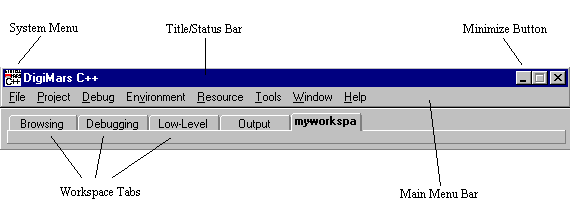
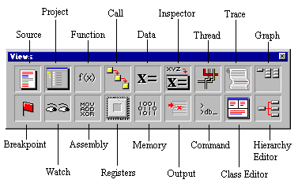
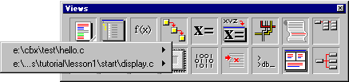
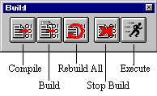
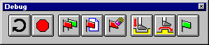
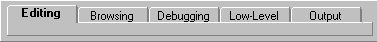
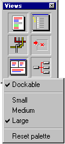
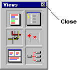
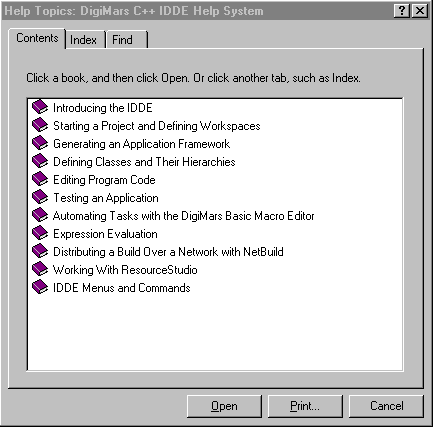

Home
| Search
| CTG
| RTL
| IDDE
| STL
Home
| Search
| CTG
| RTL
| IDDE
| STL
Last update Fri Apr 28 16:30:16 2006
|
Reference 1. Introducing Digital Mars C++ 2. Introducing the IDDE Part 2: Creating an Application with Digital Mars C++ 3. Starting a Project and Defining Workspaces 4. Generating an Application Framework 5. Defining Classes and Their Hierarchies 6. Editing Program Code 7. Adding Look and Feel with Resources 8. Testing an Application Part 3: Learning Digital Mars C++ by Example 9. Introduction to the Tutorial 10. Lesson 1: Create the DOS Application 11. Lesson 2: Generate an Application Framework 12. Lesson 3: Customize the Interface 13. Lesson 4: Add Messages with ClassExpress 14. Lesson 5: Add a Dialog Box with ClassExpress Part 4: More about Creating Programs 15. More about Projects and Workspaces 16. More about Project Build Settings 17. More about AppExpress 18. More about ClassExpress 19. Class Editor Reference 20. Hierarchy Editor Reference 21. Text Editor Reference 22. Using Version Control Part 5: More about Testing Programs 23. Controlling and Configuring the Debugger 24. Commands Available in Debugging Mode Part 6: About Managing Resources 25. ResourceStudio Resource Editor 26. Dialog Editor 27. Menu, Accelerator and String Table Editors 28. Bitmap, Cursor, Icon, and Font Editors 29. Version Information and Custom Resource Editors Part 7: Appendixes A. Expression Evaluation B. IDDE Settings and Command-Line Options C. Using NetBuild |
2. Introducing the IDDEThe IDDE is the Integrated Development and Debugging Environment. The IDDE comes with the CD version of the development system. This chapter introduces the Digital Mars C++ development system. The first part of the chapter describes the IDDE main window and toolboxes. The second part introduces Part Two of this manual, and outlines the steps involved in developing an application in the IDDE.Running Digital Mars C++ under Windows 3.1, Windows 95, and Windows NTDigital Mars C++ ships with three different integrated development and debugging environments (IDDEs), each tailored to a specific operating system and target. All IDDEs share the same user interface, and can build applications for DOS, Windows 3.1, Windows 95, Windows NT, and DOSX. Minor differences between the three IDDEs are noted throughout this manual, as appropriate. Not every IDDE can debug every kind of executable. To debug a Windows NT program, for example, you need the full 32-bit IDDE running under Windows NT.Screen images in this manual may vary in appearance from one operating system to another. Starting and exiting the IDDEsTo start the IDDE from the Program Manager, make sure that Digital Mars C++ is installed properly, then double-click on the appropriate IDDE icon in the Digital Mars C++ program group. The IDDE main window opens at the top of the screen.To exit the IDDE, choose one of three commands from the IDDE File menu: Exit, Exit & Save All, or Exit & Discard. Exit leaves the IDDE and returns to the Program Manager. Exit & Save All exits and saves all the changes to the current project and options. Exit & Discard exits the IDDE without saving any changes to the current project or options. IDDE Windows and ToolboxesYou can create, edit, and debug an application within the IDDE. The IDDE provides a variety of tools for use throughout the development process.Unlike most Windows applications, the IDDE offers more than a single window in which to work. The IDDE is a feature-rich environment in which you work with multiple windows and toolboxes on the desktop. This section describes the general characteristics of those windows and toolboxes. IDDE main windowThe IDDE main window, shown in Figure 2-1, is positioned at the top of the desktop (workspace), which is the entire screen area. From the IDDE main window, open other windows on the desktop, load projects, set project options, and perform additional tasks. Most of the actual work, such as editing program code, is done in other windows on the desktop. [Figure 2-1 IDDE main window]As shown in Figure 2-1, the IDDE main window has the following parts: system menu, title/status bar, main menu bar, and the minimize button. (Also shown is the Workspace toolbox docked below the main window. Docking means that the toolbox is attached to the IDDE main window, or the desktop edge.) The system menu and the minimize button are the standard Windows user interface elements. The other elements of the main window as well as the IDDE toolboxes are described in the following sections. The title/status barThe top line of the IDDE main window serves as both a title bar and a status bar. When you start the IDDE, the title bar displays the program name, Digital Mars C++. As actions occur in the IDDE, the title bar changes to a status bar and displays the status of the session, including the following information:
The menu barThe IDDE main window menu bar is located below the title bar. Table 2-1 summarizes the functions of the IDDE menus.Table 2-1 The IDDE menu functions
For information on how to choose menu commands, see your Windows, Windows 95, or Windows NT documentation. The IDDE toolboxesThe IDDE includes the following four toolboxes:
The Views toolboxThe Views toolbox, shown in Figure 2-2, is used to open the IDDE windows. Each of the IDDE windows is represented by an icon in the toolbox. [Figure 2-2 Views toolbox]To open a window from the Views toolbox, click and drag the appropriate icon from the toolbox onto the desktop. Alternatively, double-click on the icon to open the window. To replace one window on the screen with another, drag the icon of the window you want into a window on the desktop. Table 2-2 lists the IDDE windows. Table 2-2 IDDE windows and their functions
You can open multiple Data and Source windows. When you have more than one Data or Source window open, and then minimize more than one of them, the IDDE adds a pop-up menu to the Data or Source icons in the Views toolbox (see Figure 2-3). A small triangle in the lower-right corner of the icon indicates that a Source or Data window is minimized.  [Figure 2-3 Pop-up menu in Source icon]To open a minimized Data or Source window:
The Build toolboxThe Build toolbox, shown in Figure 2-4, provides quick access to project build commands. [Figure 2-4 Build toolbox]To use the Build toolbox, click on the appropriate button in the toolbox. These buttons perform the following tasks:
The Debug toolboxDebug toolbox icons (shown in Figure 2-5) let you efficiently choose debugging commands during a debugging session. The commands available in the Debug toolbox correspond to the commands on the IDDE Debug menu and are described in detail in the section "Debug Toolbox Icons," in Controlling and Configuring the Debugger. [Figure 2-5 Debug toolbox] The Workspace toolboxWhen you first open the IDDE, the Workspace toolbox appears docked below the IDDE main window menu bar. The Workspace toolbox is used for switching between workspaces, which are customized layouts of windows that you define. The Workspace toolbox is shown in Figure 2-6. [Figure 2-6 Workspace toolbox]As you create new workspaces, their names appear on tabs in the Workspace toolbox. To switch to a different workspace, click on its tab. For more information on defining workspaces, see Starting a Project and Defining Workspaces. Using toolboxesThe IDDE's Window menu lists the names of all toolboxes. When a checkmark is displayed next to the toolbox name, the toolbox appears in the current workspace. To open a toolbox, select the toolbox name from the IDDE's Window menu.You can position a toolbox on the desktop by clicking on its title bar and dragging the toolbox to the desired position on the screen. To dock a toolbox, position it on the IDDE main window or on the edge of the screen. To undock the toolbox, click on the toolbox and drag it away from the IDDE main window or the desktop edge. You can change the shape of a toolbox by clicking the toolbox edge and dragging the outline of the toolbox to the desired shape. If you want to remove an icon from a toolbox, right-click on the icon you want to remove, drag it from the toolbox, and drop it. Toolboxes can be configured with commands in their pop-up menus. To access a toolbox's pop-up menu, right-click on an empty part of the toolbox (as shown in Figure 2-7). When the first menu item, Dockable, is checked, you can dock the toolbox. The next three items (Small, Medium, and Large) let you change the size of the toolbox and its icons. The last item on the menu, Reset Palette, lets you restore any icons or buttons you have removed from the toolbox.  [Figure 2-7 toolbox pop-up menu]To identify a toolbox icon, hold the mouse cursor over the icon for a few seconds. A small yellow tag appears, showing the name of the icon. To close a toolbox, click on the Close box. Each toolbox has a Close box in the upper-right corner, as shown in Figure 2-8.  [Figure 2-8 Close box] The IDDE windowsThis section describes the general properties of the IDDE windows and how to work with them.Opening and closing windows in the IDDEDigital Mars C++ supports both standard Windows methods and a few unique methods for displaying and managing windows. In the IDDE, open a window in any of the following ways:
Each window has a Close box similar to that of a toolbox (see Figure 2-8). Click on the box to close the window. Using the drag-and-drop featureThe Digital Mars C++ IDDE provides a drag-and-drop feature that lets you execute commands by dragging from one window onto another or onto the desktop. For example, you can drag a module's name from the project window onto the desktop in order to edit that module in a Source window. When something cannot be dropped on a particular window or the desktop, the cursor changes from that icon to a "No" sign (a circle with a diagonal line through it). Most of the drag-and-drop functionality is available in debugging mode and is described in Commands Available in Debugging Mode.Using the IDDEThe following sections serve as an overview of Part Two of this manual and introduce you to the process involved with creating an application in the Digital Mars C++ environment.Creating a projectProjects are integral to the Digital Mars C++ development system. You cannot build an application without creating a project. A project is a collection of source files, headers, resource files, and other components that you need to build an application.To help you create a new project, a new tool called ProjectExpress is included. This tool lets you select the project target (the result of your development efforts), the directory for the project files, and other options. While in ProjectExpress, you can also use AppExpress to generate the framework for the application. AppExpress is a tool that automatically generates an application framework. AppExpress lets you select from a variety of application types, then creates a working skeleton of source code and resource definitions. After the framework is generated, then concentrate on customizing the framework and implementing the features of the application. Using workspacesBecause the IDDE provides a variety of windows used for specialized tasks, you probably do not need all of them open simultaneously. The IDDE workspaces provide a convenient way to switch from one screen layout to another. Workspaces are task-oriented, as opposed to project-oriented. You create workspaces for different tasks, such as editing, browsing, or debugging, which you perform in different projects. The Workspace submenu of the IDDE's Environment menu provides access to workspace commands.Creating and editing your applicationOnce you have created a project, you can start working on the program's code. This section introduces the IDDE tools.Creating and editing resourcesIf writing a Windows application, you probably need to create resources such as menus and dialog boxes. Commands on the IDDE's Resource menu access the Digital Mars C++ ResourceStudio, a powerful tool for creating and editing resources.Binding resources to classesClassExpress is a tool for binding resources, such as dialog box controls, to the classes in the program. This is needed in order to be able to respond to user actions. Launch ClassExpress by choosing ClassExpress from the IDDE's Tools menu, or from within ResourceStudio.Editing class hierarchiesThe IDDE provides two tools for editing class hierarchies: Class Editor and Hierarchy Editor. Open a Class or Hierarchy Editor window from the Views toolbox, or from the Goto View submenu of the IDDE's Window menu. Both editors have the same functionality, but different interfaces. The Class Editor emphasizes member editing, while the Hierarchy Editor emphasizes inheritance relationships.Editing codeWhile you can greatly reduce the amount of work needed to write a complex application using the tools Digital Mars C++ provides, eventually you need to edit the raw source code. The IDDE includes a powerful, scriptable text editor with features such as customizable key bindings, automatic token coloring, delimiter matching, and other features. Edit code in the Source window, which can be opened from the Views toolbox or the Goto View submenu of the IDDE's Window menu.Debugging your applicationAfter writing most or all of the application's source code, it is time to test and debug it. Do this by switching the IDDE into debugging mode and using the commands on the IDDE's Debug menu, the Debug toolbox, and various debugging windows opened from the Views toolbox.Using helpThe following sections describe several ways to get online help in the IDDE.The title/status barWhen you click and hold on a command in a menu, the IDDE main window title/status bar shows a brief description of the menu command.The IDDE Help menuThe IDDE provides several online help systems through the IDDE Help menu. The first items on the IDDE Help menu access the IDDE Help system, shown in Figure 2-9. To navigate the IDDE Help system, click on the icon representing the type of help needed.Alternatively, choose Search from the IDDE Help menu to find a particular topic in the IDDE Help system.  [Figure 2-9 IDDE Help system]Other commands on the Help menu access Windows API and Microsoft Foundation Class reference material. Finally, the About Digital Mars C++ command on the IDDE Help menu displays a dialog box with version information on the Digital Mars C++ Development System. Other ways to launch online helpTo view help information for a run-time library function, highlight the name of the function in a Text Editor window and type CTRL+ALT+F1.To view frequently used help topics without navigating IDDE Help, associate specific .hlp files with key combinations. (For example, to view help for ResourceStudio, map rstudio.hlp with the key combination CTRL+ALT+F4.)
To associate a key combination with a help file, choose Edit/Browsing
Settings from the IDDE's Environment menu. Click
Text, then click Help files.
|